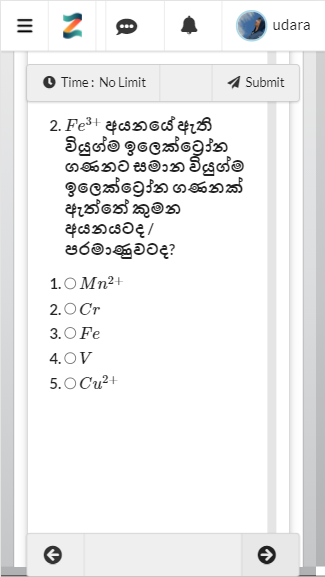
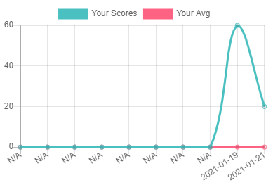
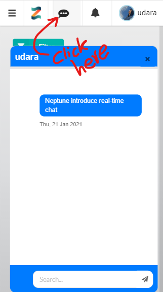
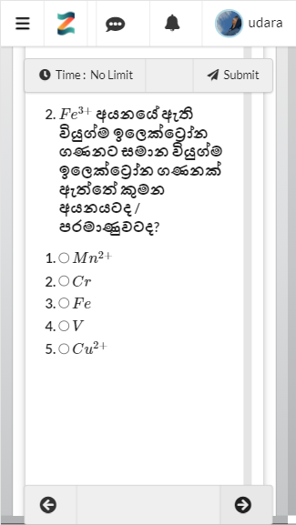
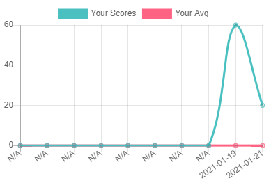
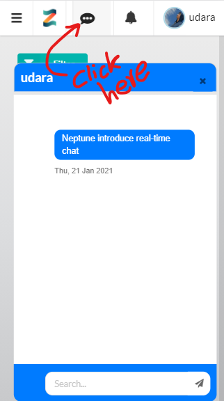

Neptune Release
 Our team continue to improve the zscore platform to help students to study smart and teachers to connect with their students with ease.
Our team continue to improve the zscore platform to help students to study smart and teachers to connect with their students with ease.Nepture (Version 1.0) is the result of our strong effort for last two months to meet the quality we dream.
This release packs a tons of features which are described in this document.
New year comes with new features
### Feature 1: Join Groups
Now in your dashboard you get the option to switch groups. We work with qualified A/L teachers to create groups.
By joining a group you get access to lessons and quizzes created by the group.
Also you get to discuss questions in the group discussion or directly contact the teacher in the real-time chat_system
By default everyone belongs to zscore group which allows you to access lessons and quizzes created by our own team.
If you need additonal support ask our admin to add you to a group to learn from a A/L teacher.
If you are a teacher, we can help you create a group. Only the teacher's approved by our team will be allowed to create a group.
This is to maintain the quality we have been maintaining since our begining.
Contact our admin at admin@zscore.lk for learn about the process of joining zscore.lk as a teacher. ### Feature 2: Mobile quiz view Our platform is designed to work in both PC and mobile. With the small screen size it can be tricky to try exams/quizzes on mobile. We solve this issue in our new mobile quiz view which allow you to navigate between questions with a single touch.  ### Feature 3: Progress chart We have been investigating the best way to let our students track their progress. In this release we introduce the progress chart feature in the dashboard. This will show your results in the last 10 exams/quizzes your attempted and your moving average. The comparison with the moving average is the best way to know whether you are improving. We are excited to know how you will find this feature useful.  ### Feature 4: Real-time chat Now you can get help from the teacher or system admin in real-time using our chat message feature. We designed it in such a intutive way that you would know how to use just by trying it. Just click on the message button on your top menu bar, the rest is easy to understand. If you find this feature intresting, send a 'Hi' message to the admin.  ### Feature 5: Login with Mobile For people who wish to login with their mobile number can use our new login mechanism. We also introduce this to our quiz opening window so that users can login directly to try a quiz. Currently, only the group admins can enable group users to use their mobile number. We will make login with mobile globally availiable soon. ### Feature 6: Performance Last but not least the performance. We improve our back-end algorithms so the user can have a smooth and snapy experience. Specially, you would notice that quiz opening is faster now because we avoid copying quizzes to your workspace. We also introduce a new algorithm to our Live Socket technology which reduce the server load. The performance is a major concern for us and we will keep improving it. ### Final Thoughts We worked hard to bring the Neptune Release to you so that you can study and teach better. We hope you like it. Let us know what you feel about our new release. If you have ideas on how we can do better we love to hear from you and introduce those things in our next release.
Contact our admin at admin@zscore.lk for learn about the process of joining zscore.lk as a teacher. ### Feature 2: Mobile quiz view Our platform is designed to work in both PC and mobile. With the small screen size it can be tricky to try exams/quizzes on mobile. We solve this issue in our new mobile quiz view which allow you to navigate between questions with a single touch.  ### Feature 3: Progress chart We have been investigating the best way to let our students track their progress. In this release we introduce the progress chart feature in the dashboard. This will show your results in the last 10 exams/quizzes your attempted and your moving average. The comparison with the moving average is the best way to know whether you are improving. We are excited to know how you will find this feature useful.  ### Feature 4: Real-time chat Now you can get help from the teacher or system admin in real-time using our chat message feature. We designed it in such a intutive way that you would know how to use just by trying it. Just click on the message button on your top menu bar, the rest is easy to understand. If you find this feature intresting, send a 'Hi' message to the admin.  ### Feature 5: Login with Mobile For people who wish to login with their mobile number can use our new login mechanism. We also introduce this to our quiz opening window so that users can login directly to try a quiz. Currently, only the group admins can enable group users to use their mobile number. We will make login with mobile globally availiable soon. ### Feature 6: Performance Last but not least the performance. We improve our back-end algorithms so the user can have a smooth and snapy experience. Specially, you would notice that quiz opening is faster now because we avoid copying quizzes to your workspace. We also introduce a new algorithm to our Live Socket technology which reduce the server load. The performance is a major concern for us and we will keep improving it. ### Final Thoughts We worked hard to bring the Neptune Release to you so that you can study and teach better. We hope you like it. Let us know what you feel about our new release. If you have ideas on how we can do better we love to hear from you and introduce those things in our next release.